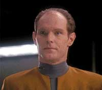
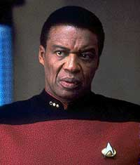
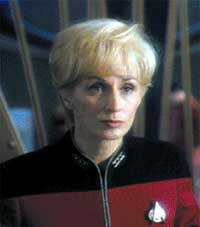
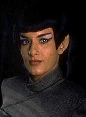

|
fcil ser santo no paraso... (Parte II)
A completa histria
dos Maquis
 Os
Maquis foram formalmente introduzidos no Universo de Jornada no
excelente episdio duplo da segunda temporada de DS9 intitulado
"The Maquis". Os
Maquis foram formalmente introduzidos no Universo de Jornada no
excelente episdio duplo da segunda temporada de DS9 intitulado
"The Maquis".
Com vocs, "The Maquis, Parte I":
O episdio abre com a destruio de um cargueiro Cardassiano (o
Bok'Nor) imediatamente aps a sua partida de DS9. Fica claro para
o espectador que o sabotador/terrorista um cidado da Federao,
de nome William Samuels, vestido como oficial da Frota Estelar.
Investigaes preliminares revelam traos de tecnologia da
Federao entre os destroos do cargueiro enquanto chega
estao um antigo amigo de Ben Sisko dos tempos da Academia da
Frota Estelar, o tenente-comandante Calvin Hudson.
Hudson o responsvel pelas colnias da Federao no
interior da DMZ (Zona Desmilitarizada). Ele diz claramente a Sisko
que a Federao abandonou essas colnias, sua presena no
local uma literal palhaada e o tratado entre federados e
cardassianos, sob qualquer aspecto, foi um mau tratado.
 De
volta ao Promenade, uma Vulcana de nome Sakonna procura Quark para
encomendar mercadorias (pouco antes, ela havia se encontrado com
Samuels, fornecendo instrues para facilitar a sua fuga da estao,
mas seus planos so frustrados, pois Samuels acaba sendo raptado
por dois aliengenas, sem conhecimento de Sakonna).
Ben Sisko volta aos seus aposentos e se surpreende por no
encontrar Jake, mas sim Gul Dukat. Dukat diz estar ali para ajudar
(de forma no-oficial) no "Caso Bok'Nor" e promete
oferecer a Sisko uma real noo do que est acontecendo na DMZ.
Sisko e Dukat partem em um explorador para a DMZ. L encontram
naves com assinaturas de dobra da Federao e de Cardssia, com
configuraes totalmente desconhecidas. Ambas as faces
ignoram as ordens de Sisko e de Dukat, envolvendo-se em diversas
manobras militares literalmente nas "barbas" dos dois,
sobre o que Dukat comenta: "Veja, Comandante, que sem ajuda
de nenhum de nossos governos, estes colonos j comearam a sua
prpria guerra particular no interior da DMZ".
De volta a DS9, Sakonna chega para jantar com Quark e lhe mostra a
lista de itens em que ela est interessada. Atordoado, Quark
descobre que a Vulcana est interessada em uma quantidade enorme
de armas. No dando a menor bola para a reao do Ferengi, ela
avisa que vai pagar em Latinum e vai precisar de um suprimento
continuo de "mercadoria".
Na DMZ, Sisko e Dukat adentram a sala do conselho em Volan III,
onde as faces de colonos Cardassianos (liderados por Gul Evek)
e colonos da Federao (liderados por Hudson, e tendo entre eles
uma mulher chamada Kobb e um homem chamado Amaras) discutem os
eventos recm-presenciados por Sisko e Dukat.
Em meio a exaltadas discusses de responsabilidade, Evek produz
um vdeo contendo a confisso de Samuels (claramente torturado e
brutalizado) sobre a sabotagem do Bok'Nor. Quando Hudson exige a
presena de Samuels, dois Cardassianos entram com o seu corpo em
um saco e Evek diz: "Infelizmente ele cometeu suicdio em
sua prpria cela."
Donde a reunio degenera em absoluto caos. Quando novamente a ss,
Hudson diz a Sisko que conhecia Samuels (um fazendeiro por toda a
sua vida). Diz tambm que os colonos Cardassianos pretendem
expulsar (ou matar) todos os colonos da Federao da zona e para
isto contam com a ajuda no-oficial (via suprimentos de armas,
por exemplo) do prprio Comando Central em Cardssia.
Hudson suspeita que o Bok'Nor estava de fato carregando armas, ao
que Sisko replica, dizendo que o seu depsito de carga estava
vazio quando ele atracou em DS9. E diz tambm que a Federao no
deixou outra escolha aos colonos quando os abandonou, seno
defender-se a si prprios por todos os meios possveis e necessrios.
 Na
viagem de volta para DS9 no explorador, Dukat e Sisko continuam
discutindo sobre o incidente com o Bok'Nor (sua tripulao de 78
Cardassianos e se de fato ele estava transportando armas para as
colnias Cardassiana na DMZ), sobre o que Dukat no
perdoa:"Eu sei que voc adoraria encontrar uma justificativa
para este homicdio em massa de forma a aliviar a sua 'conscincia
de cidado da Federao e oficial da Frota Estelar'. Mas se o
Bok'Nor estivesse carregando armas, eu saberia, e pela vida de
todos os meus filhos, eu juro a voc, ele no estava."
Sakonna avisa Quark que houve uma mudana de planos e ela vai
precisar da mercadoria para hoje noite. Sisko designa uma sute
de hspedes para Dukat e logo em seguida recebe a
"novidade" de O'Brien de que o Bok'Nor fora destrudo
por um dispositivo implosivo de fabricao da Federao.
De volta ao seu escritrio ele recebe Kira, que ainda teme uma
represlia de Cardssia contra o sistema Bajoriano devido ao
incidente com o Bok'Nor (sobre o que Sisko pode agora garantir que
no vai ocorrer).
Ponderando a difcil situao com Kira, ambos percebem que no
h de fato NENHUMA escolha fcil a se tomar. A major,
entretanto, est certa sobre uma coisa: " Os Cardassianos so
o inimigo, no os seus prprios colonos. E se a Frota Estelar no
consegue perceber isto, ento a Federao ainda mais ingnua
do que eu j imaginava."
Mais tarde, Sakonna e outros colonos (incluindo um homem chamado
Niles em uniforme da Frota Estelar) conseguem raptar Dukat.
Enquanto os oficiais graduados de DS9 esto discutindo as ltimas
naves a deixar DS9 (suas rotas, misses, destinos etc.) de forma
a implementar uma possvel misso de resgate a Dukat, o rdio
sub-espacial capta uma transmisso vinda da DMZ, na qual um grupo
est assumindo o rapto de Dukat. O grupo se auto-denomina
"Maquis".
Tomando a melhor escolha dentre as naves registradas, o grupo de
resgate liderado por Sisko (decidido a trazer Dukat de volta por
todos os meios necessrios, "mesmo que tenhamos que atirar
em nossa prpria gente?" registra um preocupado Bashir,
frente a um silencioso Sisko) parte para as Badlands, onde se
teleportam para a superfcie de um asteride, onde so
emboscados por um grupo de colonos liderados por Cal Hudson sem
uniforme.
O episdio extremamente intenso e faz um excelente uso de
todos os personagens, especialmente Dukat e Sisko. Os pontos de
vista de Hudson e Kira indicam que os colonos so o mais
importante aspecto em qualquer deciso a ser tomada, enquanto
Dukat se alinha com o ponto de vista da Federao de que a paz
o mais importante, esta superposio dos pontos de vista de
Dukat e da Federao parece reforar os pontos positivos de
Dukat e os pontos negativos da Federao (estranho de se falar,
mas realmente esta a mensagem passada, parabns a todos os
envolvidos).
Sisko parece ficar cada vez mais pressionado por todos os lados a
medida que os eventos vo se desenvolvendo, um personagem
extremamente vivo e excepcionalmente bem escrito, com direito a
uma fenomenal atuao de Avery Brooks.
Quanto ao trabalho da dupla Sisko & Dukat, deixe-me colocar
deste modo: eu assistiria de bom grado SOMENTE estes dois se
enfrentando durante 45 minutos (ou mais) em um cenrio mnimo.
Muito pouco detrata este episdio, mas as cenas de Sakonna e
Quark so definitivamente mais fracas que o restante do episdio
(mas dificilmente esto na categoria do no-assistvel) e temos
uma bvia gafe de trama quando ao final do episdio Sisko &
cia. se teleportam para o asteride (obviamente esperando
encontrar uma situao hostil) sem nenhum meio ou plano de fuga.
Entretanto, o que realmente segura um pouco o episdio a fraca
interpretao de Bernie Casey como Cal Hudson, essencialmente
lendo as linhas do roteiro sem o mnimo da paixo que a
caracterizao do personagem exigia.
Com vocs, "The Maquis, Part II":
Bens Sisko contempla seu amigo, o tenente-comandante Calvin
Hudson, o qual, por sua presena no asteride, confirma ser
membro dos "Maquis". Hudson tira o seu uniforme de uma
bolsa e o entrega a Sisko dizendo que "ultimamente ele tem
ficado muito apertado em mim".
Hudson se diz encantado pela determinao destes colonos e diz no
poder dar as costas para eles como reafirma que a Federao o
fez, chamando novamente o TRATADO de um mero pedao de papel.
Perguntado por Sisko sobre o paradeiro de Dukat ele responde que
nunca imaginou que um dia Ben se aliaria com um Cardassiano contra
ele. Hudson faz uma ultima proposta a Sisko de utilizar DS9 como
uma base Maquis.
 Quando
Sisko recusa, ele e seus companheiros so tonteados pelos Maquis.
De volta a DS9, Sisko tem uma reunio com a almirante Necheyev,
que lhe d o sermo padro de que o tratado tm que ser
honrado a todo custo, de passagem rotulando (e negando qualquer
possvel valor para a sua causa) os Maquis como um "bando de
cabeas-quentes irresponsveis".
Pouco antes de partir, ordena a Sisko que abra um dilogo com os
Maquis. Quando Kira entra no escritrio, ouve o desabafo de
Sisko:
- Estabelecer um dilogo? Que diabos ela acha que eu estou
tentando fazer todo este tempo? S porque um grupo de pessoas
pertence Federao no quer dizer que eles sejam todos
santos... O real problema a Terra. Na Terra no existe
pobreza, crime ou guerra - voc olha para fora do QG da Frota
Estelar e voc v o Paraso. Bem, fcil ser santo no Paraso.
Mas os Maquis no vivem no Paraso. Aqui, na DMZ, estes
problemas ainda no foram resolvidos. Aqui no existem santos,
apenas pessoas. Famintas, assustadas e determinadas a fazer o que
for necessrio para sobreviver, quer isto receba a aprovao da
Federao ou no.
(Ira Steven Behr sente muito orgulho destas linhas, as quais ele
considera uma sntese de como DS9 alargou os horizontes da viso
infinitamente idealista de um futuro para humanidade de Gene
Roddenberry.)
Em seguida, Odo prende Quark como cmplice de Sakonna. Quark
fornece uma lista das armas vendidas e diz que ela estava
pretendendo us-las em breve. Sisko se encontra com uma alta
autoridade Cardassiana (o Legado Parn) em visita a DS9.
Sisko lhe assegura de que todo o possvel est sendo feito para
encontrar e resgatar Dukat. Para o espanto de Sisko, Parn diz que
isto no necessrio e diz que Dukat acusado em Cardssia
de liderar um pequeno grupo de militares envolvidos no contrabando
de armas para a DMZ.
Aps Parn partir, Sisko diz a Kira que agora eles precisam
encontrar Dukat mais do que nunca, pois agora ele tem certeza de
que o Comando Central Cardassiano est de fato contrabandeando
armas para a DMZ.
OBrien determina uma nova lista de possveis esconderijos e
Sisko lidera uma nova expedio para tentar encontrar Dukat.
Desta vez, eles tm sucesso: recuperam Dukat e prendem vrios
Maquis.
Sisko deixa Amaros fugir com um recado pra Hudson: "Diga a
ele que eu ainda no disse Frota sobre sua traio, ainda
temos tempo de resolver esta situao juntos, mas nosso tempo
est se esgotando. Diga a ele que ainda tenho o seu uniforme, ele
pode pegar de volta a hora que quiser."
De volta estao, Sisko visita Dukat e informa a este sobre
sua conversa com o Legado Parn. Dukat fica chocado, finalmente
tendendo a acreditar que de fato Cardssia est contrabandeando
armas na DMZ.
Dukat sugere que ele e Sisko se unam para impedir o contrabando e
os Maquis, sobre o que Sisko concorda. Quando Sisko vai deixando a
sala, Dukat agradece por ele ter salvo sua vida, ao que Sisko
responde: "Eu tenho certeza que voc teria feito o mesmo por
mim."
Dukat acha que o Comando Central est usando comerciantes
Xepolitas para o contrabando e fundamental impedir que um
cargueiro desta raa entregue sua carga (de armas) levando
suspenso do contrabando do Comando Central.
Enquanto isto, Quark e Sakonna discutem em suas celas os detalhes
da "lgica dos Maquis". Depois, Sakonna confessa a
Sisko que os Maquis pretendem atacar um depsito de armas montado
no interior de um complexo civil em um planeta da DMZ.
Dukat diz que pode ser capaz de descobrir o nome de tal planeta.
Sisko retorna a Volon III de forma a avisar os colonos (e por
conseguinte os Maquis) de que ele sabe do plano. Sisko
surpreendido por Hudson e um grupo de Maquis armados.
Quando o comandante oferece uma bolsa tendo no seu interior o
uniforme de Hudson, este o desintegra, simbolizando que no h
mais retorno para ele. Sisko avisa que se eles forem atacar, ele
os impedir, custe o que custar.
Nossos heris esperam com trs exploradores em Bryma (o local do
depsito, segundo as fontes de Dukat). Eles devem impedir que os
Maquis cheguemm ao alcance dos sensores do planeta, o que pode
precipitar uma guerra em larga escala.
Sisko & cia. conseguem impedir o ataque Maquis, apesar do
confronto aberto entre eles (exploradores X naves Maquis). Sisko
deixa Hudson escapar por se negar a destruir sua nave.
De volta a DS9, Ben recebe os cumprimentos do Comando da Frota por
ter evitado uma guerra, sobre o que ele reflete ter apenas adiado
o inevitvel.
A segunda parte s fica melhor. Sisko posto em uma difcil
situao com a Almirante Necheyev, pressionando de um lado para
que ele resolva a situao com os Maquis o mais rpido possvel,
a sua amizade por Hudson pendendo de outro e Dukat no perdendo
nenhuma chance de aumentar o nvel de tenso.
Sisko ao final do episdio (de onde ele emerge como um heri
complexo com diversos conflitos internos e dvidas) consegue
interromper o contrabando de armas do comando Central (com a ajuda
de Dukat, especialmente em um cena em que Dukat faz o comandante
do cargueiro Xepolita se "borrar" de medo com sua INCRVEL
PRESENA) e impedir o iminente ataque Maquis, dando a Hudson a
chance de voltar atrs at o LTIMO SEGUNDO possvel.
desnecessrio repetir que as cenas entre Dukat & Sisko so
infinitamente assistveis e Dukat emerge deste episdio como o
mais complexo, interessante e melhor antagonista da histria de
Jornada nas Estrelas.
As cenas de batalha ao final do episdio foram tambm muito bem-executadas e a utilizao do uniforme de Hudson de forma simblica,
absolutamente brilhante.
 Pequenos
problemas, como a falta de maior intensidade nas cenas envolvendo
Sakonna e Quark (separados ou juntos), a (j comentada) fraca
interpretao de Bernie Casey (como Cal Hudson) e uma pequena
gafe de trama, tendo todo os oficiais graduados de DS9 no combate
final, no pe por terra este grande episdio.
"The Maquis" um dos melhores episdios duplos de
Jornada, estabelecendo um firme gancho onde pendurar slidas
histrias futuras. Uma deliciosa "Caixa de Pandora" que
no iria se fechar to cedo..
Continua...
Luiz
Castanheira editor do Trek
Brasilis
|